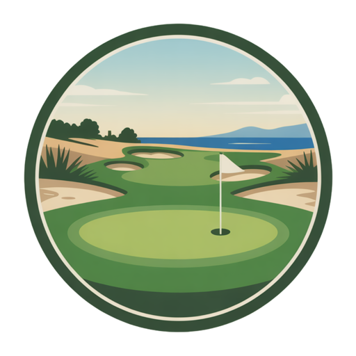
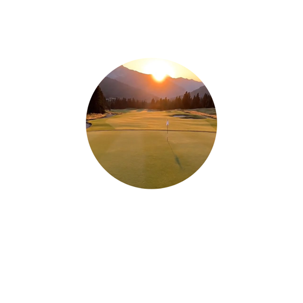

FREE GOLF TOOLS / GOLF TRIP PLANNER
The trip that finally leaves the group chat.
Tee times, travel, and the little details. Put your next great golf trip in order.

02
Add a round. Or a detour.
Use the travel buffer to leave room between plans.
Saved in this browser. Download a trip file for a portable backup.
A little more golf.
Explore all five tools ↗02 / FREE TOOL
Golf Trip Budget Calculator
Know the cost before anyone commits. Compare the extras and see what your group needs to budget.
Build the budget ↗
03 / FREE TOOLCan I Finish Before Dark?
Find your latest tee time for 9 or 18 holes, with room for the pace of real golf.
Check the daylight ↗04 / FREE TOOL
Golf Membership Break-Even Calculator
Find the rounds it takes to make a golf membership worthwhile, including the costs beyond dues.
Run the numbers ↗05 / FREE TOOL
Swingalysis by Greenskeeper
Review every frame, draw what matters, and compare two swings. Free, private, and right in your browser.
Review your swing ↗